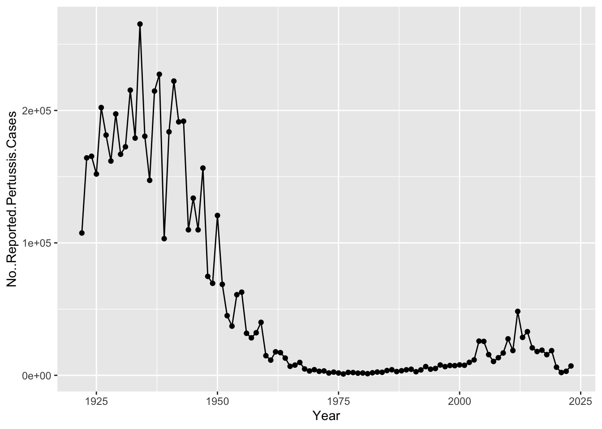
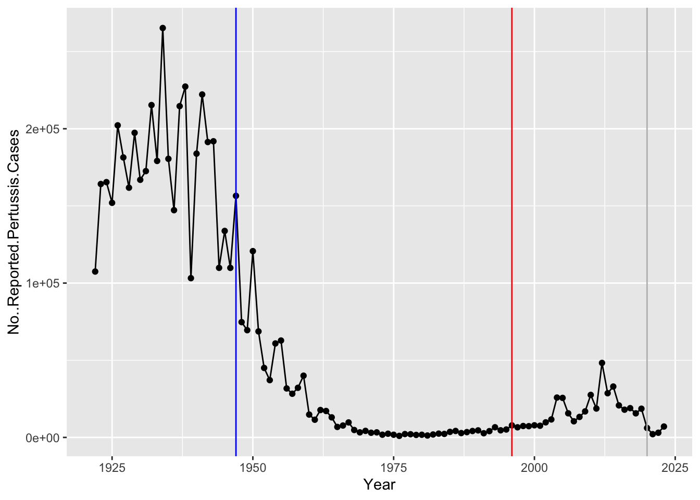

cdc <- data.frame(
Year = c(1922L,1923L,1924L,
1925L,1926L,1927L,1928L,
1929L,1930L,1931L,1932L,
1933L,1934L,1935L,1936L,
1937L,1938L,1939L,1940L,
1941L,1942L,1943L,1944L,
1945L,1946L,1947L,1948L,
1949L,1950L,1951L,
1952L,1953L,1954L,1955L,
1956L,1957L,1958L,1959L,
1960L,1961L,1962L,1963L,
1964L,1965L,1966L,1967L,
1968L,1969L,1970L,1971L,
1972L,1973L,1974L,1975L,
1976L,1977L,1978L,
1979L,1980L,1981L,1982L,
1983L,1984L,1985L,1986L,
1987L,1988L,1989L,1990L,
1991L,1992L,1993L,1994L,
1995L,1996L,1997L,1998L,
1999L,2000L,2001L,2002L,
2003L,2004L,2005L,
2006L,2007L,2008L,2009L,
2010L,2011L,2012L,2013L,
2014L,2015L,2016L,2017L,
2018L,2019L,2020L,2021L,
2022L,2023L),
No..Reported.Pertussis.Cases = c(107473,164191,165418,
152003,202210,181411,
161799,197371,166914,172559,
215343,179135,265269,
180518,147237,214652,
227319,103188,183866,222202,
191383,191890,109873,
133792,109860,156517,74715,
69479,120718,68687,
45030,37129,60886,62786,
31732,28295,32148,40005,
14809,11468,17749,17135,
13005,6799,7717,9718,
4810,3285,4249,3036,3287,
1759,2402,1738,1010,
2177,2063,1623,1730,1248,
1895,2463,2276,3589,
4195,2823,3450,4157,4570,
2719,4083,6586,4617,
5137,7796,6564,7405,7298,
7867,7580,9771,11647,
25827,25616,15632,10454,
13278,16858,27550,18719,
48277,28639,32971,20762,
17972,18975,15609,18617,
6124,2116,3044,7063)
)Class 19: Pertussis Mini Project
Background
Pertussis (aka whooping cough) is a highly infectious lung infection caused by bacteria B. Pertussis
The CDC tracks case numbers in in the US
cdc Year No..Reported.Pertussis.Cases
1 1922 107473
2 1923 164191
3 1924 165418
4 1925 152003
5 1926 202210
6 1927 181411
7 1928 161799
8 1929 197371
9 1930 166914
10 1931 172559
11 1932 215343
12 1933 179135
13 1934 265269
14 1935 180518
15 1936 147237
16 1937 214652
17 1938 227319
18 1939 103188
19 1940 183866
20 1941 222202
21 1942 191383
22 1943 191890
23 1944 109873
24 1945 133792
25 1946 109860
26 1947 156517
27 1948 74715
28 1949 69479
29 1950 120718
30 1951 68687
31 1952 45030
32 1953 37129
33 1954 60886
34 1955 62786
35 1956 31732
36 1957 28295
37 1958 32148
38 1959 40005
39 1960 14809
40 1961 11468
41 1962 17749
42 1963 17135
43 1964 13005
44 1965 6799
45 1966 7717
46 1967 9718
47 1968 4810
48 1969 3285
49 1970 4249
50 1971 3036
51 1972 3287
52 1973 1759
53 1974 2402
54 1975 1738
55 1976 1010
56 1977 2177
57 1978 2063
58 1979 1623
59 1980 1730
60 1981 1248
61 1982 1895
62 1983 2463
63 1984 2276
64 1985 3589
65 1986 4195
66 1987 2823
67 1988 3450
68 1989 4157
69 1990 4570
70 1991 2719
71 1992 4083
72 1993 6586
73 1994 4617
74 1995 5137
75 1996 7796
76 1997 6564
77 1998 7405
78 1999 7298
79 2000 7867
80 2001 7580
81 2002 9771
82 2003 11647
83 2004 25827
84 2005 25616
85 2006 15632
86 2007 10454
87 2008 13278
88 2009 16858
89 2010 27550
90 2011 18719
91 2012 48277
92 2013 28639
93 2014 32971
94 2015 20762
95 2016 17972
96 2017 18975
97 2018 15609
98 2019 18617
99 2020 6124
100 2021 2116
101 2022 3044
102 2023 7063library(ggplot2)Warning: package 'ggplot2' was built under R version 4.5.2ggplot(cdc)+
aes(Year,No..Reported.Pertussis.Cases)+
geom_point()+
geom_line()
Q2. Add some annotation (lines in the plot) for some major milestones in our interaction with Pertussis. The original wP deployment in 1947
ggplot(cdc)+
aes(Year,No..Reported.Pertussis.Cases)+
geom_point()+
geom_line()+
geom_vline(xintercept=1947,col="blue")+
geom_vline(xintercept=1996,col="red") +
geom_vline(xintercept=2020,col="grey")
The aP vs wP
##The CMI-P8 project
The CMI-Petussis Boost (PB) project focuses on gathering data on this very topic. What is distinct between aP and wP individuals over time when they encounter Pertussis again